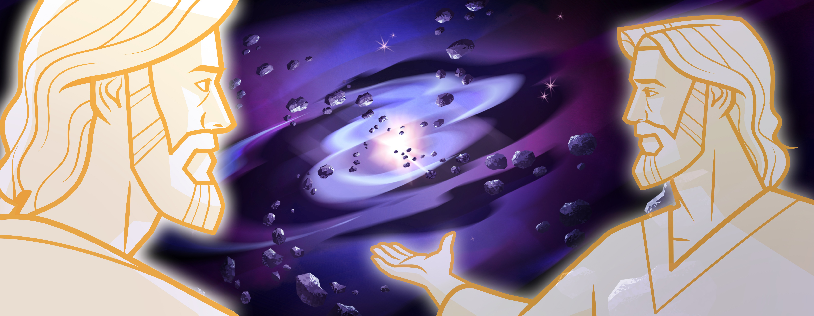

The Creation, Fall of Adam, and the Natural Man
"The entire Creation was planned by God...The plan required the Creation, and that in turn required both the Fall and the Atonement. These are the three fundamental components of the plan. The creation of a paradisiacal planet came from God..."
---President Russell M. Nelson